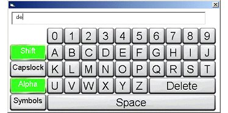
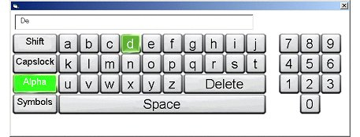

The goal of the third usability test was to refine the horizontal model. We added symbols to the horizontal model in addition to shortcuts on the controller buttons. The shortcuts allowed users to add spaces, shift the case, delete characters, and switch to the symbol set without instructions on the screen. The models that were usability tested can be seen below.
 |
| Layout 1 |
 |
| Layout 2 |
Clicking on the Symbols key changed the character set to symbols and clicking on Alpha changed it back to the alphabet. Initially we were concerned about having this type of interaction because typically good user interface design avoids the use of modes. None of the eight users in the usability test had any trouble using symbols in any input. Users also had no trouble switching back to the alphabet.
Recommendation: The mode switch was not a problem and works well for virtual keyboards.
Another change in this model was the Shift key. The Shift key switches the alphabet to upper case and then back to lower case after the user types a letter. The feedback on this feature was very good from the participants who used it. Several of the participants used the Caps Lock key instead of the Shift. When asked why they used the Caps Lock they indicated that they weren't sure how the Shift would work.
Recommendation: The sticky shift should be implemented and it was well liked by users who tried it out.
Six of the eight participants indicated that they wanted keys on the controller that were mapped to functions on the keyboard like shift, space, delete. These shortcuts were present in these prototypes. While these features were available in the prototype, only one participant realized that they were there.
Recommendation: The shortcuts are not discoverable without some type of on-screen documentation. We suggest that there be a message at the bottom of the keyboard telling the user to click a button for help. A dialog will appear that provides the user with the mappings. The same button used to make the dialog appear will dismiss it.
Finally, these prototypes turned off the keyboard repeating on any keys other than the keys used to move the cursor around the keyboard. In previous tests we observed that many users made mistakes by holding down keys too long and either typed additional letters or deleted more letters than they intended. None of the users in this usability test complained about the lack of repeating.
Recommendation: Turn off repeating on all letter keys and the delete key.